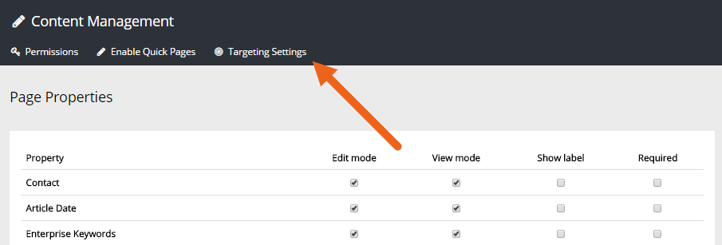
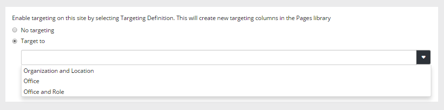
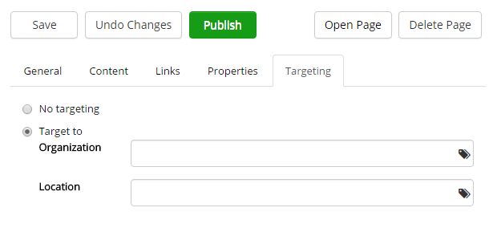
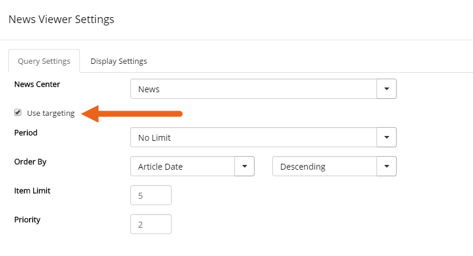

To be able to target news, you have to activate targeting for the web site News Center. It's then upp to the news editors to use targeting, or not, for a news page.
When you activate targeting you must also select a Target Definition to use. The Target Definition must be set up before you do. See this page for more information:
To enable targeting for a site, do the following:


When targeting is on for the news site, an editor can use the "Targeting" tab to select target group, if needed.

If targeting should have any effect in the News Viewer it has to be activated there as well. Do the following:
